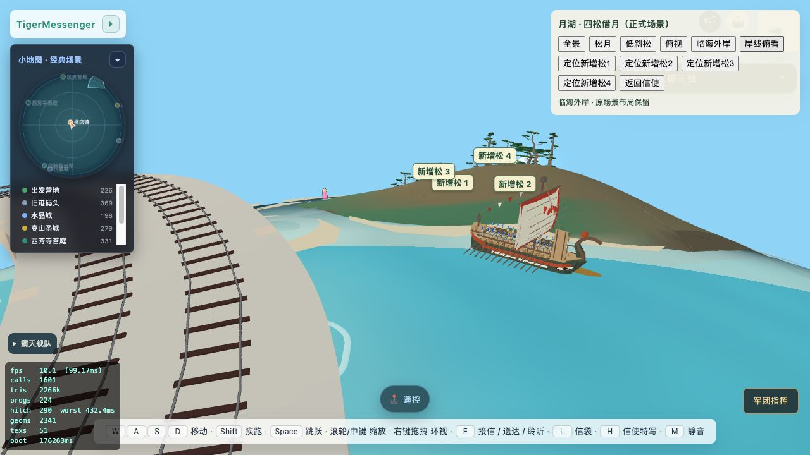
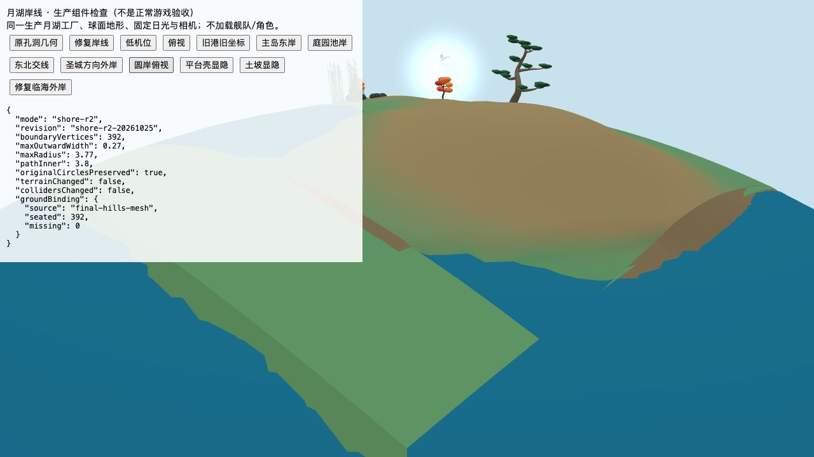
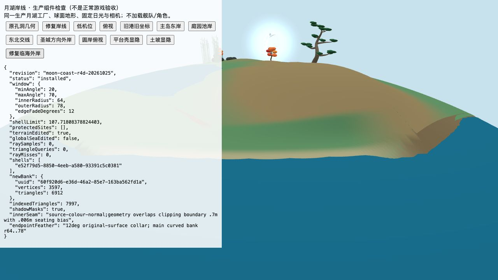

按新城、雕塑台、铁路桥和彩绘帆船的全景确认位置。处理的是松林外侧海岸，另附小月牙盘几何修复。

真实圆弧浅坡接回原岸，旧方形底板不再伸到水面上。原铁路、船、松林及月亮的位置保留。通过现有检查相机观察，没有移动角色来伪造布局。
正式游戏：🤖开发者菜单 → 月湖四松检查 → 岸线俯看／临海外岸。点击“返回信使”恢复原视角与时间。
以下是原生产工厂的独立组件，不是完整游戏截图。


8项几何、支撑及反例检查通过；正式场景读取到已安装版本，新增坡岸3597顶点、6912三角，本轮未记录控制台错误。端部过渡加宽到12°，继承原表面颜色和法线。清理范围有限，渲染、阴影与脚下支撑使用同一边界；保护轨道和人物脚印。没有声称已完整步行或乘船跑遍新岸。